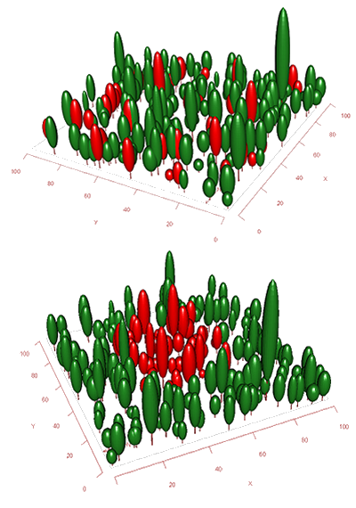

The Maespa model
The Maespa model
About
Maespa is a model of forest canopy radiation absorption, photosynthesis and water balance. The model has a long history, going back to the work of John Norman and Paul Jarvis in the 1970's and 80's. Ying -Ping Wang improved and tested the model for his PhD thesis (then called MAESTRO) (Wang & Jarvis 1990). In 1997 Belinda Medlyn obtained a version of the code from Ying-Ping Wang and revised the model, with the objectives of (i) modularising the code to make the program easier to understand and modify; and (ii) incorporating standard formulations of leaf gas exchange models (see Medlyn 2004 for a full history).
In 2008, Remko Duursma and Belinda Medlyn started expanding Maestra by including water balance and plant hydraulics routines, largely based on the SPA model by Mat Williams (Duursma and Medlyn 2012). The two models were independent for some time, but since 2013 they use the same code base. The diagram below shows how Maespa incorporates Maestra. It is straightforward to run the model 'in Maestra mode', which is consistent with the legacy Maestra model.

How to get started
To get started, download the model here, including a set of example files. Simply place all files in the same directory and run the Maespa executable. Please consult the manual for instructions on how to set up your own input files.
About us
The Maespa model is maintained by Remko Duursma (remkoduursma -at- gmail) and Belinda Medlyn.
Remko Duursma is a senior lecturer at the Hawkesbury Institute for the Environment at the University of Western Sydney, and works on a number of topics related to modelling vegetation function and interpreting plant ecophysiological data using models.
Belinda Medlyn is a Professor at the Hawkesbury Institute for the Environment at the University of Western Sydney, and keeps busy trying to improve the connection between experiments and models of plant and ecosystem functioning, at scales from leaf to globe.